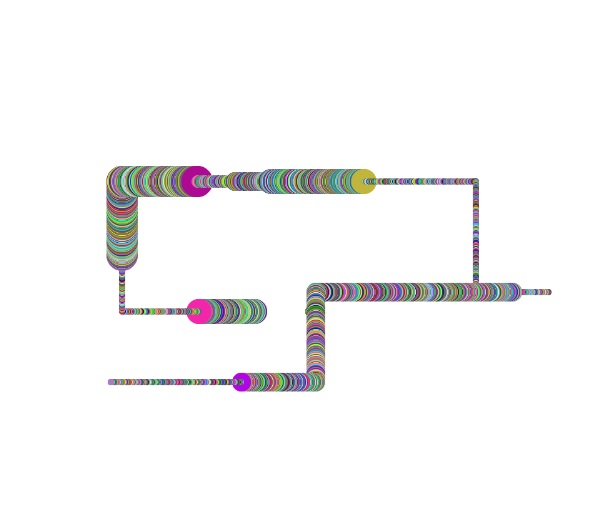

This week's assignment was to do something with sound. Sound... Well, I spent a long while thinking about what to do with sound, before I decided this would be a good time to dive into ml5.
Ml5, for those who might be unfamiliar, is a machine learning library for the P5 system. Having implemented a few machine learning models in Python, I was incredibly surprised by how easy Ml5 was to use. The sound recognition, which recognizes a handy amount of words including "yes", "no", "go", "stop", and numbers, works very well with minimal setup. So, I decided to use it.
Looking at the voice commands, I thought I could make something that moved according to what one said. Since the assignment was to make something that visualizes audio, I figured why not make something that draws according to your commands?
First, I decided on which different states I wanted to explore. In my schematic, "up" "down" "left" and "right" are the directions the brush can move in, "go" and "stop" dictate whether the pointer moves, and "yes" and "no" dictate whether the pointer will paint or not.
Each ellipse is an object with values for its own position and color. The program checks to see which state it's currently in, and if it's in the correct state to paint it pushes a new ellipse to the array. The array is spliced immediately afterwards (so that there's only ever one ellipse in the array) and then the array is drawn onto the canvas.
Code can be found here.
Comments? Questions? Concerns? Email me here!